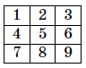

The sheikh spread out his treasures in nine sacks: 1 kg in the first bag, 2 kg in the second bag, 3 kg in the third bag, and so on, and 9 kg in the ninth bag. The insidious official stole a part of the treasure from one bag. How can the sheikh work out from which bag the official stole the treasure from using two weighings?
The first weighing. We divide the bags into groups of three bags each: 1 + 3 + 7, 2 + 4 + 5 and 6 + 8 + 9. Compare the first two groups. If the scales are in equilibrium, the theft was made from a bag of the third group; if one of the weighed groups outweighs the other, the theft was made from another group to be weighed.
The second weighing. Consider the found group of three sacks from which the theft was committed. We put on one side of the scales one bag from this group and on the other we add a bag from another group (from which the theft was not committed) with a known mass in order to balance the scales (this bag plays the role of a weight).
For example, for the first group, you can put 1 + (2) and 3 bags on the scales; for the second, you can put 2 + (3) and 5; for the third, you can put 6 + (2) and 8 (the brackets indicate "bag-weights"). If the scales are in equilibrium, then the theft is committed from the remaining bag, and if not, then it occurred from one of the bags lying on the lighter side of the scales.
We arrange the masses of the bags in the form of a table (see the figure below).

We divide the bags into three groups of three bags so that each bag includes one bag from each row and one bag from each column. The total mass of bags in each triplet will be 15: 1 + 5 + 9, 2 + 6 + 7 and 3 + 4 + 8.
The first weighing. We weigh two triples of bags. If any of them outweigh any of the others, the theft was made from another weighing triple. If the scales are in equilibrium, then the treasure is stolen from the bag of the third three.
The second weighing. Consider the group of three sacks from which the theft was committed. On two sides of the scales we put a bag from this three: on one - from the first line of the table, on another - from the second. To the first bag add one that is in the table in the cell under the second, and to the second - the one that is in the table in the cell under the first one. For example, if the triple 2 + 6 + 7 is robbed, then we put 2 + 9 on one of the scales and 6 + 5 on the other. Note that the added bags are not robbed (two bags from one column cannot be in the "suspicious" three). Without theft, the scales would be in equilibrium (since one of the bags lying on one side of the scale is 3 kg lighter than its "partner" on the other side, but the other is 3 kg heavier). Therefore, if the scales are in equilibrium, then the third bag of the triple (in our example it is 7 kg) is robbed, and if one of the bowls outweighs, then a bag of "suspicious" triples is robbed, lying on the other, lighter scale.